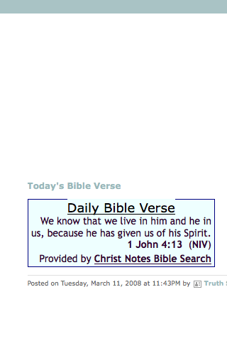

Blogs
Alright, it's confirmed. It's on. James Land will be playing at the Terminal Bar in lovely N.E. Mpls. on Wednesday, August 4th. I would say that it's a "secret show", but I promised the club that I would promote it :D But I am being low key, since it's really a litmus test. This is because my live pedalboard setup is finally ready now. That is, I think it's GOOD to go, but we'll see!
I was surfing the net today (as I'm wont to do), and began perusing the New Musical Express website. Right there, on the front page, was a photo gallery dedicated to the big "Live Aid" concert of 1985. Little did I think when I woke up this morning that this all was actually 25 years ago *to the day*!
Yo, from "Hypebot":
A few weeks back, the social media blog Mashable announced that they are celebrating Social Media Day on June 30th. In accordance, we decided to do a little something special ourselves. Tomorrow, we will be featuring some guest commentary from a few of social media's finest -along with some other voices that you'll be familiar with - on how artists should use social media.
Like many, I've seen the Facebook profile that goes like "I bet this sea lamprey can get more fans than Nickleback". I know I certainly did ;) And while I didn't become a fan, it wasn't because I didn't support the cause. Rather, it's because I think I'm gonna start my own page:
Man, I'm starting to really regret that I didn't appreciate LaLa.com more when it was around. I mean, I could still be checking out albums for free right now! The deal was: create a free account, and then you can stream any album in their massive catalog one time for FREE. Press play at the beginning, and let it go... - sorted.
One afternoon, on the way home from "work", I stopped by a liquor store. Scanning the prices, I didn't quite see what I was looking for (namely, a sweet German-or-similar beer for less than $7.00). There was, however, a craft brew from the very local Cold Spring Brewery (about 10 miles from where I'm sitting right now).
And when I saw the price as $6.99, the words FTW positively sprang to mind :D Anyhoo, I scanned the 3 varietes beckoning me this day...
So today I'd like to go more into a scenario that I've been playing around with for a few weeks now. And the solid conclusion I've come to is that to be really ready for live performance (considering its myriad forms), one should have about 50 songs down pretty darn well...
So with a title like the above, you might be thinking that I'm referring to something like this:

And while I certainly like the quote above, for this entry it's really a reference Luke's Angels. In case you don't know them, they're a sweet Twin Cities band (with strong ties to STC)...
When I was a kid, I swear my favorite animal was the raccoon. I just liked the way they looked (the mask is awesome), and they had a pretty cool "lifestyle" going on too!
And yet raccoons were about the furthest thing from my mind today as I was driving home from a friend's graduation/18th birthday party. It was a nice hour-long early summer evening drive through Central Minnesota...
It may seem counter-intuitive at the moment, but there are lots of people visiting this site. And almost all of them are here to post spammy blog entries that only a mother could love! Unfortunately for them, I'm not their mother.
And yet, I like to think all this attention is more than just because the word "blog" is in the URL.... Rather, I prefer the notion that it's because my site is so bleedin' popular ;p
Anyway(s), I occasionally need to delete these spammers' accounts from this site. And this, dear reader, is how it's done: